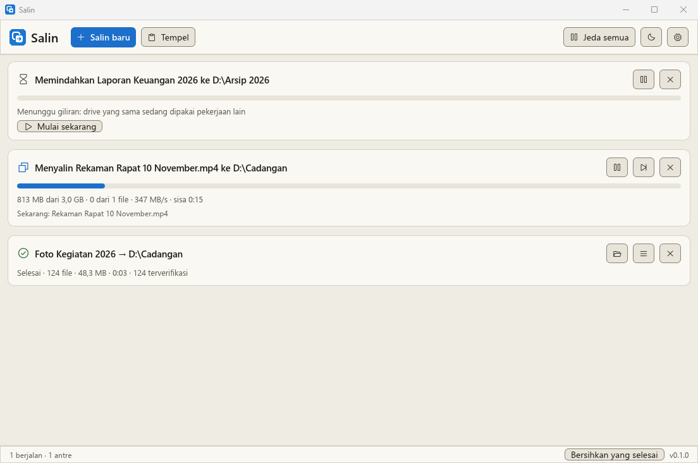
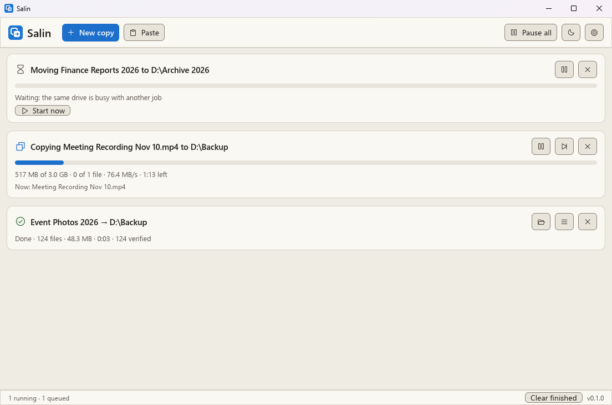
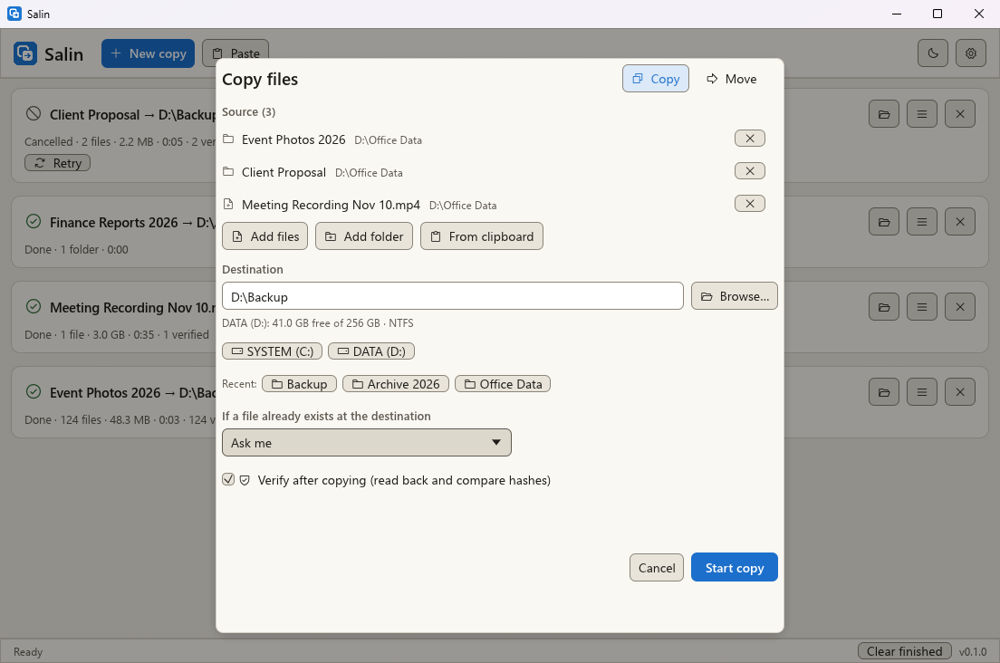
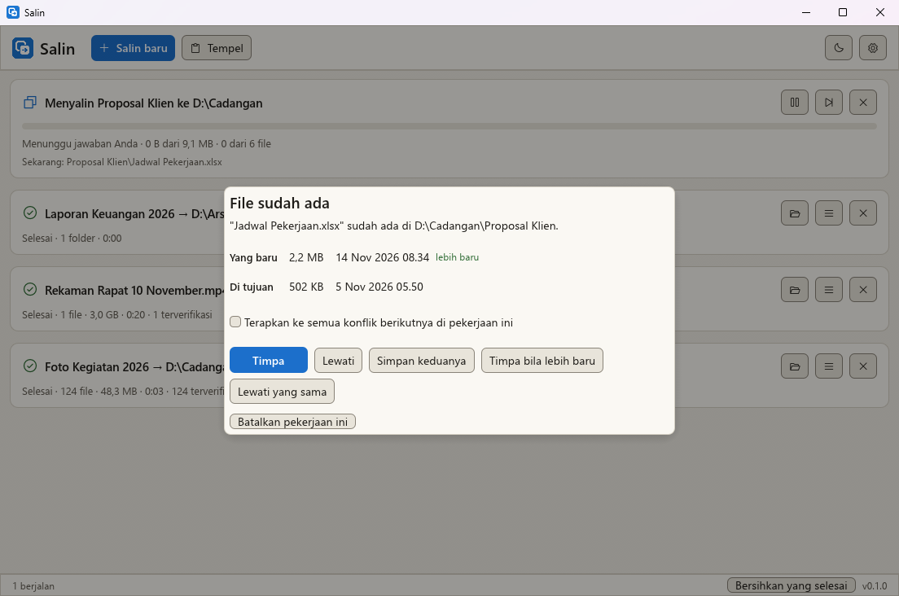
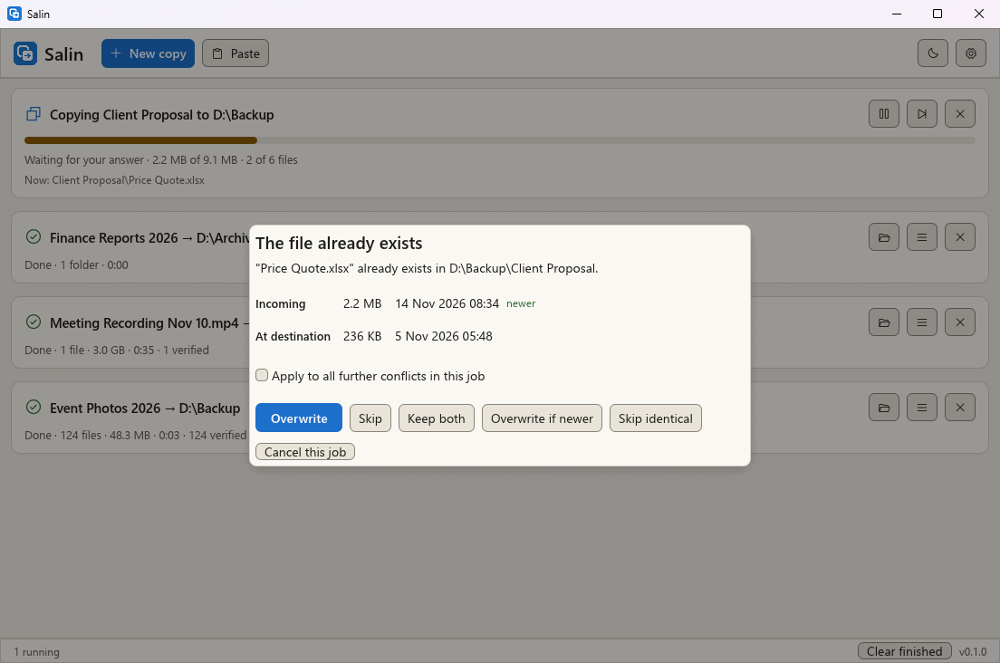
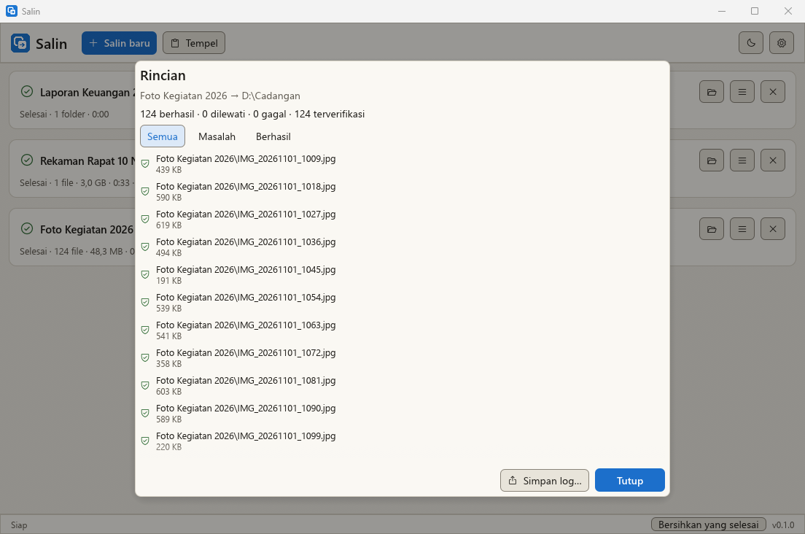
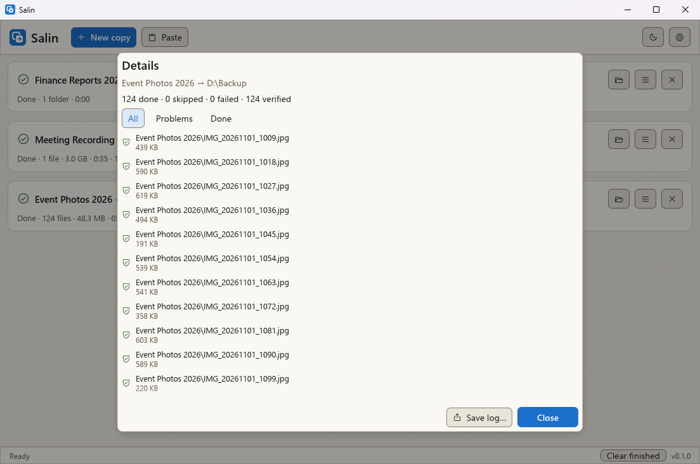

Salin dan pindahkan file tanpa meninggalkan file setengah jadi. Copy and move files without leaving half-written files behind.
Salin menyalin dan memindahkan file dengan antrean per drive, jeda di tengah file, verifikasi hash, dan log yang bisa dibuka di Excel. File sumber baru dihapus setelah salinannya lengkap. Gratis untuk rumah, kantor, dan sekolah. Salin copies and moves files with a per-drive queue, pause in the middle of a file, hash verification, and a log that opens in Excel. Source files are deleted only after the copy is complete. Free for home, office, and school.


Nama asli hanya dipakai oleh file yang sudah lengkap.The real name only goes to a file that is complete.
Penyalin biasa menulis langsung ke nama tujuan, jadi file yang terputus di tengah jalan terlihat utuh padahal rusak. Salin menulis ke nama sementara dulu, dan untuk tiap file mengikuti urutan ini.A plain copy writes straight to the destination name, so a file cut off halfway looks whole even though it is broken. Salin writes to a temporary name first, and follows this order for every file.
-
Tulis ke nama sementaraWrite to a temporary name
Isi file disalin dengan mesin salin Windows, termasuk atribut, tanggal, dan aliran data tambahan.The contents are copied with the Windows copy engine, including attributes, dates, and alternate data streams.
Neraca.xlsx.salin-partLedger.xlsx.salin-part -
Verifikasi, bila dipilihVerify, if chosen
Sumber dan salinan dibaca ulang bersamaan, salinan tanpa cache Windows, lalu hash xxh3-128 keduanya dibandingkan.The source and the copy are read back together, the copy without the Windows cache, and their xxh3-128 hashes are compared.
Neraca.xlsx.salin-partLedger.xlsx.salin-part -
Ganti ke nama asliRename to the real name
Baru di langkah ini file lama di tujuan, bila Anda memilih timpa, diganti dengan yang baru.Only at this step is an old file at the destination, if you chose to overwrite, replaced by the new one.
Neraca.xlsxLedger.xlsx -
Hapus sumber, saat memindahkanDelete the source, when moving
Folder sumber hanya dihapus bila sudah kosong, jadi file yang dilewati atau gagal tetap di tempatnya.Source folders are removed only when empty, so skipped or failed files stay where they are.
D:\Data Kantor\Neraca.xlsxD:\Office Data\Ledger.xlsx
Bila Anda membatalkan, file sementara dihapus. Bila listrik padam atau flashdisk dicabut, yang tertinggal hanya file .salin-part, bukan file rusak bernama asli. Pindah di dalam drive yang sama cukup mengganti nama, jadi selesai seketika.If you cancel, the temporary file is deleted. If the power goes out or a flash drive is pulled, all that is left is a .salin-part file, never a broken file under the real name. Moving within the same drive is just a rename, so it finishes instantly.
Mulai dari Explorer, tanpa memasang apa pun ke dalam Explorer.Start from Explorer, without installing anything into Explorer.
Installer menambahkan perintah ke menu klik kanan untuk akun Windows Anda saja. Tidak ada DLL yang dimuat ke Explorer, jadi Salin tidak bisa membuat Explorer macet. Semua item yang Anda pilih masuk ke satu jendela.The installer adds commands to the right-click menu for your Windows account only. No DLL is loaded into Explorer, so Salin cannot make Explorer hang. Everything you select lands in one window.
- "Salin ke…" dan "Pindahkan ke…" pada file dan folder membuka formulir berisi pilihan Anda. Di Windows 11 ada di "Tampilkan opsi lainnya"."Copy to…" and "Move to…" on files and folders open the form with your selection. On Windows 11 they are under "Show more options".
- Salin dengan Ctrl+C atau potong dengan Ctrl+X di Explorer, lalu klik kanan area kosong folder tujuan dan pilih "Tempel dengan Salin". Penyalinan langsung dimulai.Copy with Ctrl+C or cut with Ctrl+X in Explorer, then right-click an empty spot in the destination folder and choose "Paste with Salin". Copying starts right away.
- "Kirim ke > Salin" untuk pilihan berapa pun banyaknya."Send to > Salin" for a selection of any size.
- Atau seret file ke jendela Salin, tekan Ctrl N untuk Salin baru, atau Ctrl V untuk memakai file yang disalin di Explorer.Or drop files onto the Salin window, press Ctrl N for a new copy, or Ctrl V to use files copied in Explorer.
- Formulir menampilkan ruang kosong drive tujuan, tombol drive, dan tujuan yang terakhir dipakai.The form shows the destination drive's free space, drive buttons, and recently used destinations.



File yang sudah ada tidak ditimpa diam-diam.Existing files are never overwritten silently.
Bawaannya Salin bertanya, dengan ukuran dan tanggal kedua file berdampingan. Jawaban bisa diterapkan ke semua konflik berikutnya, atau aturannya dipilih sebelum mulai.By default Salin asks, with the size and date of both files side by side. The answer can apply to every further conflict, or you pick the rule before starting.
| Timpa bila lebih baruOverwrite if newer | Hanya bila tanggal sumber lebih baru.Only when the source date is newer. |
|---|---|
| Lewati yang samaSkip identical | Ukuran dan tanggal sama berarti dilewati, dengan toleransi 2 detik untuk flashdisk FAT32.Same size and date means skipped, with a 2-second tolerance for FAT32 flash drives. |
| Simpan keduanyaKeep both | Salinan baru diberi nama seperti Neraca (2).xlsx.The new copy gets a name like Ledger (2).xlsx. |
| Coba lagiRetry | Setelah ada yang gagal, jalankan lagi tanpa menyalin ulang yang sudah beres.After a failure, run again without copying what already went through. |
Saat drive sibuk, penuh, atau tercabut.When a drive is busy, full, or unplugged.
- Antrean per driveOne queue per drive
- Pekerjaan yang memakai drive yang sama menunggu giliran supaya disk tidak bolak-balik. Pekerjaan di drive lain berjalan bersamaan. "Mulai sekarang" melompati antrean.Jobs that use the same drive wait their turn so the disk doesn't thrash. Jobs on other drives run at the same time. "Start now" skips the queue.
- Jeda di tengah filePause mid-file
- File 4 GB yang dijeda di 60% dilanjutkan dari 60%, tidak diulang dari awal.A 4 GB file paused at 60% resumes from 60%, not from the start.
- Periksa sebelum mulaiChecks before starting
- Ruang kosong dihitung per cluster, dan file di atas 4 GB yang tidak muat di flashdisk FAT32 ditunjukkan sebelum ada yang disalin.Free space is counted per cluster, and files over 4 GB that cannot fit on a FAT32 flash drive are shown before anything is copied.
- Flashdisk tercabut, disk penuhDrive unplugged, disk full
- Pekerjaan berhenti dan menunggu: colokkan lagi atau kosongkan ruang, lalu pilih Coba lagi, Lewati, atau Batal.The job stops and waits: plug the drive back in or free some space, then choose Retry, Skip, or Cancel.
- Galat sementaraTemporary errors
- File yang sedang dibuka aplikasi lain atau jaringan yang tersendat dicoba ulang otomatis tiga kali sebelum dicatat gagal.A file open in another app or a network hiccup is retried automatically three times before it is logged as failed.
- Saat jendela tidak dilihatWhile you look away
- Progres tampil di tombol taskbar, tombol itu berkedip saat Salin butuh jawaban, dan bunyi singkat terdengar saat semua selesai.Progress shows on the taskbar button, the button flashes when Salin needs an answer, and a short sound plays when everything is done.
- Path panjang dan nama anehLong paths and odd names
- Path lebih dari 260 karakter, nama Unicode, file hanya-baca dan tersembunyi, serta tanggal folder ikut tersalin.Paths over 260 characters, Unicode names, read-only and hidden files, and folder dates are all handled.
- Menutup saat masih menyalinClosing while copying
- Salin bertanya dulu. Bila Anda tetap menutup, pekerjaan dibatalkan dan file sementara dibersihkan.Salin asks first. If you close anyway, the jobs are cancelled and their temporary files are cleaned up.
Setiap file tercatat, dan catatannya bisa disimpan.Every file is recorded, and the record can be saved.
Rincian menampilkan setiap file: berhasil, terverifikasi, dilewati beserta alasannya, atau gagal beserta pesan galat yang bisa dibaca. Saring hanya yang bermasalah, lalu simpan log sebagai teks bertab yang langsung terbuka rapi di Excel.Details lists every file: done, verified, skipped with the reason, or failed with a readable error message. Filter to just the problems, then save the log as tab-separated text that opens neatly in Excel.


File Anda tidak ke mana-mana.Your files go nowhere.
Salin tidak punya server, akun, atau iklan. Penyalinan terjadi di komputer Anda, antar-drive dan folder jaringan yang terlihat di Windows.Salin has no server, no account, and no ads. Copying happens on your computer, between the drives and network folders that Windows can see.
Satu-satunya sambungan keluar adalah pemeriksaan pembaruan sekali sehari ke situs ini, dan bisa dimatikan di Pengaturan. Laporan galat hanya disimpan di komputer Anda. Rinciannya ada di kebijakan privasi.The only outgoing connection is a once-a-day update check against this site, and you can turn it off in Settings. Error reports are stored only on your computer. The details are in the privacy policy.
Yang belum bisa dilakukan SalinWhat Salin can't do yet
- Menggantikan dialog salin bawaan Windows. Ctrl+C lalu Ctrl+V biasa di Explorer tetap memakai Windows; pakai "Tempel dengan Salin" atau menu "Salin ke…".Replace the built-in Windows copy dialog. A plain Ctrl+C then Ctrl+V in Explorer still uses Windows; use "Paste with Salin" or the "Copy to…" menu.
- Tampil di menu klik kanan Windows 11 yang ringkas. Itu butuh paket bertanda tangan kode, jadi untuk sekarang perintahnya ada di "Tampilkan opsi lainnya".Appear in the compact Windows 11 right-click menu. That needs a code-signed package, so for now the commands are under "Show more options".
- Menampilkan "Salin ke…" untuk lebih dari 15 item terpilih. Explorer sendiri menyembunyikannya; pakai "Kirim ke > Salin" atau "Tempel dengan Salin".Show "Copy to…" for more than 15 selected items. Explorer itself hides it; use "Send to > Salin" or "Paste with Salin".
- Sinkronisasi atau cermin, yaitu menghapus file di tujuan yang tidak ada di sumber, dan menyalin terjadwal.Sync or mirror, meaning deleting destination files that are not in the source, and scheduled copies.
- Menyalin izin akses NTFS (ACL). Seperti Explorer, salinan mengikuti izin folder tujuan.Copy NTFS permissions (ACLs). Like Explorer, copies take the permissions of the destination folder.
- Mengikuti junction dan symlink folder di dalam sumber. Tautan itu dilewati supaya tidak menyalin isi yang sama berulang kali.Follow folder junctions and symlinks inside a source. Those links are skipped so the same content is not copied over and over.
- Menyalin ke FTP, SFTP, atau penyimpanan awan secara langsung. Salin bekerja dengan drive dan folder jaringan yang terlihat di Windows.Copy to FTP, SFTP, or cloud storage directly. Salin works with the drives and network folders that Windows can see.
- Menjamin berjalan mulus di Windows 10. Salin dikembangkan dan diuji di Windows 11; Windows 10 belum diuji. Bila ada masalah, ceritakan di Komunitas.Promise a smooth run on Windows 10. Salin is developed and tested on Windows 11; Windows 10 has not been tested yet. If something goes wrong, tell us in the Community.
- Installer belum bertanda tangan kode. Windows SmartScreen bisa menampilkan "Windows protected your PC"; pilih "More info", lalu "Run anyway". Bandingkan SHA-256 di bawah bila ragu.The installer is not code-signed yet. Windows SmartScreen may show "Windows protected your PC"; choose "More info", then "Run anyway". Compare the SHA-256 below if in doubt.
- Antivirus bisa menahan installer yang masih baru ini. Saat diuji, Avast menjalankan installer di dalam sandbox-nya, sehingga Salin tidak terdaftar di Windows. Bila jendela installer berbingkai antivirus, batalkan, tunggu antivirus selesai memeriksa, lalu jalankan lagi.Antivirus software may hold back this new installer. In testing, Avast ran the installer inside its sandbox, so Salin was not registered with Windows. If the installer window has an antivirus frame around it, cancel, wait for the antivirus to finish checking, then run it again.
- Berjalan di macOS atau Linux. Salin hanya untuk Windows.Run on macOS or Linux. Salin is for Windows only.
Unduh Salin 0.1.1Download Salin 0.1.1
Gratis untuk pemakaian pribadi, kantor, dan sekolah. Windows 10 atau 11, 64-bit. Dipasang untuk pengguna ini tanpa hak administrator, dan menu Explorer bisa dilepas kapan saja dari Pengaturan.Free for personal, office, and school use. Windows 10 or 11, 64-bit. Installs for the current user without administrator rights, and the Explorer menu can be removed at any time from Settings.
69fe398b3bf8c4338b80cb603f72857296012f9f1f42361b448a8df827633ef4